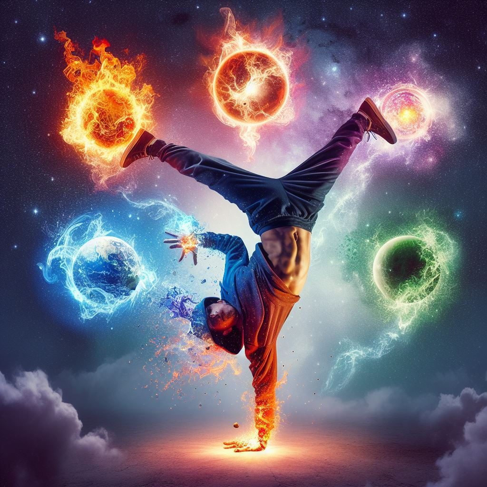

Uw bestemming voor het leren van de 4 Hip-hop elementen.
De Vier elementen.
Rappen (MCing): Rappen is de stem van hiphop. MCs
(Masters of Ceremonies) brengen krachtige verhalen en boodschappen
over met ritmisch gesproken woorden over beats. Het is een vorm
van zelfexpressie en storytelling die de stem geeft aan de
stemlozen.
DJing: DJs zijn de architecten van de beats. Ze
mixen, scratchen en creëren de instrumentale tracks waarop rappers
hun vaardigheden kunnen tonen. DJing is de ruggengraat van
hiphopmuziek en een kunstvorm op zich.
Breakdancing (B-boying/B-girling): Breakdancing is de
beweging en de ziel van hiphop. Met acrobatische moves,
indrukwekkend voetenwerk en krachtige spins, brengen B-boys en
B-girls de dansvloer tot leven in energieke optredens en battles.
Op vandaag de dag wordt niet enkel breakdancing beschouwd als een
hip-hop dansstijl maar ook bv: Popping, house, krump, etc, ...
Graffiti Art: Graffiti kunst siert niet alleen
muren, maar vertelt ook verhalen. Graffiti kunstenaars gebruiken
kleur en vorm om hun boodschappen en de geest van hiphop te
verspreiden, waardoor straten in levendige kunstgalerijen
veranderen.
Favoriete lessen
Breakdance

Bron: Bing Ai
Breakdance, vaak eenvoudigweg 'breaking' of 'b-boying/b-girling'
genoemd, is een dynamische en acrobatische stijl van streetdance die
in de jaren zeventig opkwam in de Bronx, New York City. Het is een
van de vier belangrijkste elements van de hiphopcultuur, naast
rappen, dj'en en graffitikunst.
DJ'ing
Bron: Bing Ai
DJ'ing is een kunst van improvisatie en creativiteit. Het vermogen
om onverwachte overgangen te maken, de menigte te lezen en de
perfecte track te kiezen op het juiste moment is wat DJ's
onderscheidt. Bij World of Hip-hop delen we de passie voor DJ'ing en
bieden we de tools en training om je eigen mixmeester te worden.
Popping
Bron: Bing Ai
Popping is een unieke en expressieve streetdancestijl die in de
jaren zeventig in Californië ontstond. vooral in de Afro-Amerikaanse
en Latinx-gemeenschappen. Popping is nauw verbonden met de bredere
hiphopcultuur en wordt vaak uitgevoerd naast andere urban
dansstijlen zoals Locking en breken.
Ben je klaar om je passie aan te wakkeren?
Zoek niet verder en til je vaardigheden naar een hoger niveau! Bij
World of Hiphop streven we ernaar alle 4 de elementen van hiphop
binnen handbereik te brengen. Ben je een beginner die je eerste
stappen zet, een doorgewinterde danser die je techniek wil verfijnen
of een waar talent in het crëeren van graffitikunst, onze diensten
zijn geschikt voor alle leeftijden en niveaus.
Sinds 2010 t.em. 2020 was ik actief als dansleerkracht/performer/entertainer en heb ik mijn passie
voor dans gedeeld in een verscheidenheid aan dansstijlen. Mijn
danservaring omvat disciplines zoals o.a. popping, breakdance,
hip-hop, ... Met volle enthousiasme heb ik al mijn kennis en vaardigheden
overgebracht naar mijn leerlingen gedurende al die jaren. Mijn lessen
zijn gericht op het bevorderen van technische precisie, creativiteit
en expressie in freestyle, terwijl ik ook aandacht besteed aan de
historische en culturele context van elke dansstijl. Als
dansleerkracht streef ik ernaar om mijn studenten te inspireren en
hen te helpen groeien, niet enkel als danser maar ook als persoon.
Student programmeur aan Artesis Plantin sinds 2023.